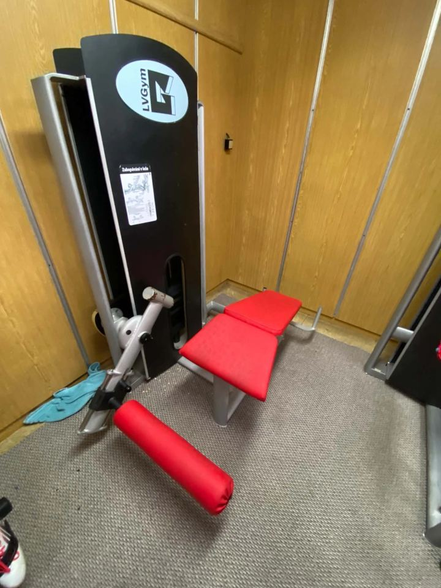

Zakopávání vleže
Zadní stehna · lýtko
- Lehni na břicho, kotníky pod válec, chyť držadla.
- Pokrč nohy k hýždím, pomalu vrať zpět.
- Chyba: zvedání pánve z lavice, rychlé spouštění.
⚽ Nejdůležitější stroj. Natržený hamstring je nejčastější svalové zranění fotbalistů. Spouštěj aspoň 3 vteřiny.